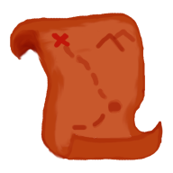

<ion-header [translucent]="true">
  <ion-toolbar>
    <ion-buttons slot="start">
      <ion-menu-button></ion-menu-button>
    </ion-buttons>
    <ion-title>{{ folder }}</ion-title>
  </ion-toolbar>
</ion-header>

<ion-content [fullscreen]="true">
  <ion-header collapse="condense">
    <ion-toolbar>
      <ion-title size="large">{{ folder }}</ion-title>
    </ion-toolbar>
  </ion-header>

  <div id="container">
    <strong class="capitalize">{{ folder }}</strong>
    <p>Explore <a target="_blank" rel="noopener noreferrer" href="https://ionicframework.com/docs/components">UI Components</a></p>
    <ng-container *ngIf="!initialize">
      
      <div (click)="initializeGame()" class="flex">
        <a href="javascript:void(0)" class="bttn">Initialize</a>
      </div>
    </ng-container>
    <ion-phaser [game]="game" [initialize]="initialize"></ion-phaser>
    <div *ngIf="initialize" (click)="changeAngle()" class="flex bottom-button">
      <a href="javascript:void(0)" class="bttn">Set Angle</a>
    </div>
  </div>
</ion-content>
